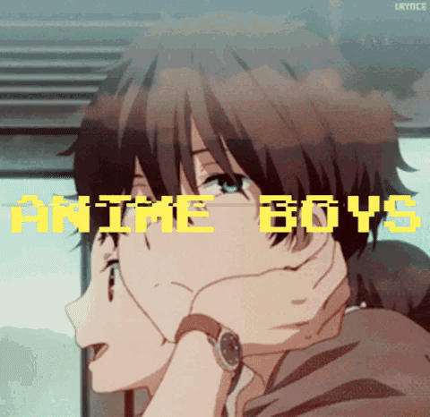
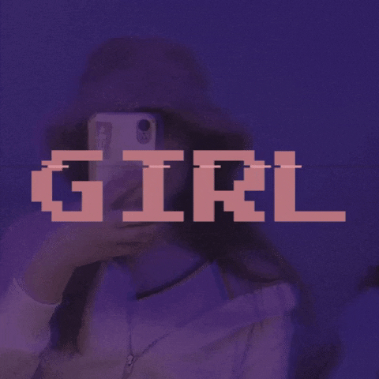
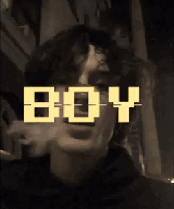

Propat.tk
Propat.tk settings
Couleur d'arrière plan:
noir
défaut
blanc
rouge
Image d'arrière plan:
soon
Bruit d'arrière plan:
Optic soon
Langages
Soon
By Yu
Paramètres
Mises à jours
Status de nos serveur
Discord


